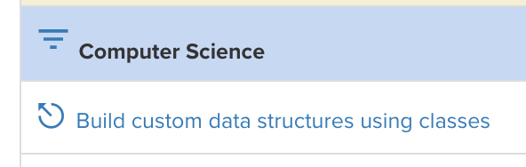
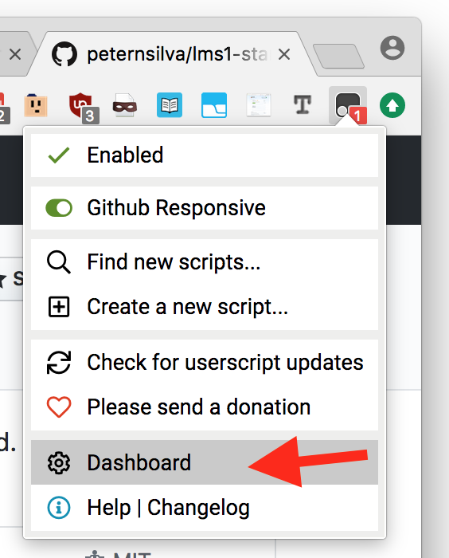
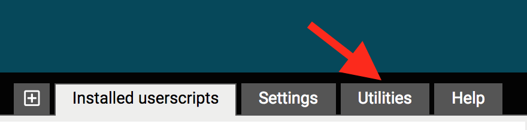
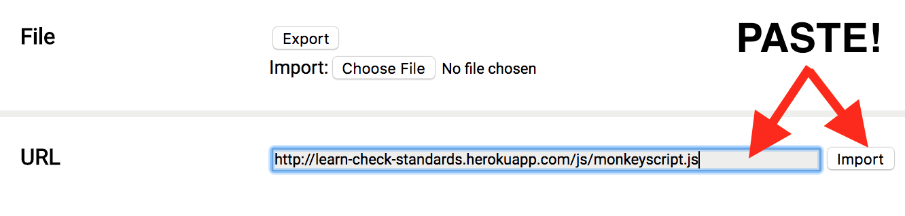

There's a userscript you can install to modify the LEARN interface itself!

- Install the TamperMonkey Chrome Extension
- Copy this link: http://learn-check-standards.herokuapp.com/js/monkeyscript.js
- 
- 
- 
- Visit your "My Performances" page with all the grades for standards.